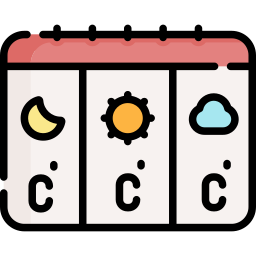

{{cityname2}}
{{region}},{{country}}
{{address}}
{{localtime | date: "EEE, MMM d, y h:mm a"}}
{{weatherTemp?.current.feelslike_c}}°C | {{weatherTemp?.current.feelslike_f}} °F
{{'tab3.sunrise' | translate }} :{{day1.astro.sunrise}}
{{'tab3.sunset' | translate }} :{{day1.astro.sunset}}
{{'tab3.humid' | translate }} :{{weatherTemp?.current.humidity}}%
{{'tab3.speed' | translate }} :{{weatherTemp?.current.gust_kph}} km/hr

{{row?.date_epoch * 1000 | date:"MMM d, y"}}
{{'tab3.max' | translate }}: {{row?.day.maxtemp_c}}°C
{{'tab3.min' | translate }}: {{row?.day.mintemp_c}}°C
{{'tab3.rain' | translate }}: {{row?.day.daily_chance_of_rain}}%
{{'tab3.pre' | translate }}: {{row?.day.totalprecip_mm}} mm